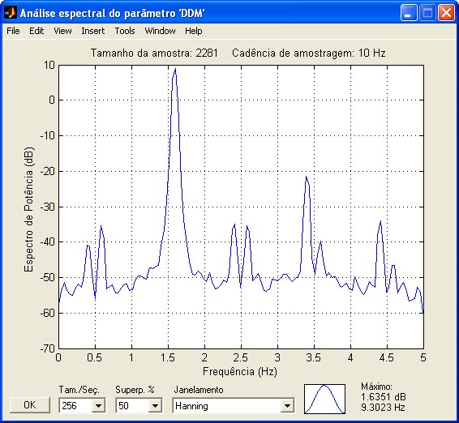
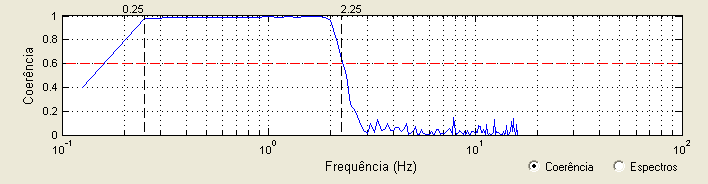
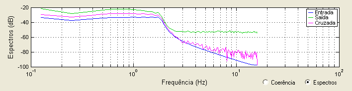
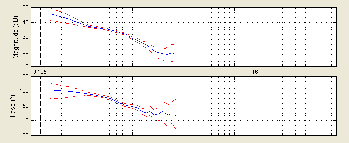
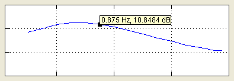
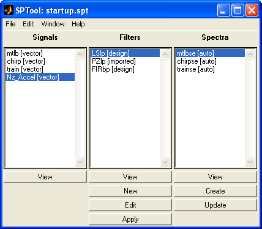
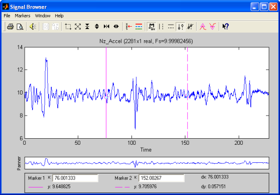
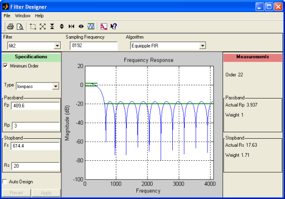
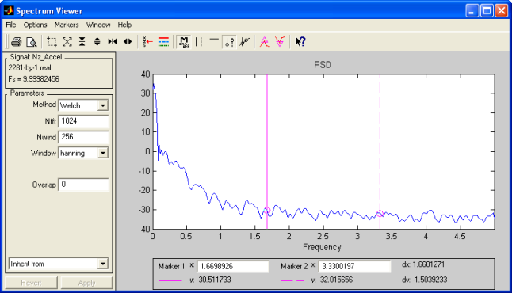

| Menu Dados |
  |
Espectro
de Potência
Essa função
realiza uma análise espectral do parâmetro
selecionado em y e apresenta o gráfico de espectro de
potência em
função da frequência.
Os resultados
são
referentes apenas ao intervalo selecionado
(intervalo visível no gráfico principal do R_DAT).
- Selecione em y o
parâmetro que deseja analisar.
- Defina o intervalo
de análise, limitando-o à parte visível do gráfico.
- Clique no menu “Dados ► Análise de dados
... ► Espectro de potência”.
Será
apresentada uma janela com a análise espectral da
amostra, ilustrando a magnitude de potência em decibéis em função da
frequência em Hertz.
O tamanho da amostra e a cadência de amostragem são apresentados na parte superior do gráfico.
Para o cálculo
da
frequência, o
R_DAT usa o parâmetro definido como tempo de referência, caso exista,
ou o
primeiro parâmetro
de tempo na lista.

O R_DAT faz uso
da função “psd.m” do Toolbox de
processamento de sinais do MATLAB, que emprega o método modificado do
periodograma de Welch.
O método divide a amostra em várias seções parcialmente superpostas
e aplica
um janelamento para
reduzir o espalhamento da
potência espectral.
É possível
modificar vários parâmetros importantes para a
análise, através dos campos na parte inferior da janela:
|
Campo |
Descrição |
Opções |
| Tam./Seç. |
Tamanho de cada
seção de análise (limitado ao tamanho da amostra) |
64, 128, 256, 512, 1024, 2048 e 4096 |
| Superp. % |
Porcentagem de
superposição das seções adjacentes |
0, 10, 20, 30,
40, 50, 60, 70, 80 e 90 % |
| Janelamento |
Janelamento aplicado a
cada seção |
Bartlett-Hann Bartlett Blackman Blackman-Harris Bohman Flat Top Gaussiana Hamming Hanning Nuttall's Blackman-Harris Parzen (de Retangular Triangular |
O formato do
janelamento selecionado é apresentado em um
pequeno gráfico à
direita do campo “Janelamento”.
Resposta em Frequência
Essa função fornece a resposta em frequência estimada de um sistema (diagrama de Bode) a partir dos dados dos parâmetros de entrada e de saída no domínio do tempo.
Os resultados
são
referentes apenas ao intervalo selecionado
(intervalo visível no gráfico principal do
R_DAT).
- Defina o intervalo
de análise, limitando-o à parte visível do gráfico.
- Clique no menu “Dados ► Análise de dados
... ► Resposta
em frequência”.
Será
apresentada uma janela com a resposta
em frequência da
amostra, ilustrando a magnitude da resposta em decibéis e a variação de
fase em graus em função da
frequência em Hertz ou radianos por segundo, além de um gráfico
auxiliar que pode apresentar, a critério do usuário, as funções
espectrais ou a função coerência.
O tamanho da amostra e a cadência de amostragem são apresentados na parte superior do gráfico.
Para o cálculo
da frequência, o R_DAT usa o parâmetro definido como tempo de
referência, caso exista, ou o primeiro parâmetro
de tempo na lista.

Na parte inferior da janela, selecione os parâmetros de entrada e de saída a serem analisados nos campos "Entrada" e "Saída".


Na
opção "Coerência", é apresentada a função coerência entre entrada e
saída (linha azul) e o limite de aceitação (linha vermelha tracejada),
conforme definido pelo usuário no campo "Limite". As opções são: 0.5,
0.55, 0.6, 0.65, 0.7, 0.75, 0.8, 0.85, 0.9 e 0.95.
Em função do limite definido pelo usuário, o R_DAT tentará fornecer as
frequências de corte mínima e máxima que abranjam o maior trecho
contínuo acima do limite de aceitação (no mínimo 3 pontos). Esse trecho
é definido por retas
pretas tracejadas e os valores são apresentados logo acima do gráfico.
Caso necessário, o usuário pode arrastar as barras com o botão
esquerdo do mouse, definindo o trecho de interesse manualmente.
A resposta em frequência será calculada apenas no trecho definido entre
essas duas frequências de corte.
Na opção "Espectros", são apresentadas as funções espectrais da entrada
(linha azul), da saída (linha verde) e a cruzada (linha magenta),
representando o espectro de potência dos sinais em função da frequência.
O R_DAT faz uso
das funções “psd.m” e "csd.m"
do Toolbox de
processamento de sinais do MATLAB para obter as funções espectrais.
O método divide a amostra em várias seções parcialmente superpostas
e aplica
um janelamento para
reduzir o espalhamento da
potência espectral.
É possível
modificar vários parâmetros importantes para a
análise, através dos campos na parte inferior da janela:
|
Campo |
Descrição |
Opções |
| Tam./Seç. |
Tamanho de cada
seção de análise (limitado ao tamanho da amostra) |
64,
128, 256, 512, 1024, 2048 e 4096 ou inserção manual em segundos, que fornecerá o tamanho correspondente da seção automaticamente |
| Superp. % |
Porcentagem de
superposição das seções adjacentes |
0, 10, 20, 30,
40, 50, 60, 70, 80 e 90 % |
| Janelamento |
Janelamento aplicado a
cada seção |
Bartlett-Hann Bartlett Blackman Blackman-Harris Bohman Flat Top Gaussiana Hamming Hanning Nuttall's Blackman-Harris Parzen (de Retangular Triangular |
O formato do
janelamento selecionado é apresentado em um pequeno gráfico à
direita do campo “Janelamento”.
A resposta
em frequência é apresentada nos gráficos "Magnitude (dB)" e "Fase (°)",
apenas no trecho definido entre as frequências de corte mínima e máxima
(manual ou em função do limite de aceitação).
As frequências mínima e
máxima gerais são apresentadas como retas pretas tracejadas,
com seus valores apresentados
entre os gráficos. A frequência mínima é o
inverso do tamanho das seções e a máxima é a frequência de Nyquist.
O usuário pode optar por apresentar os intervalos de confiança para 2.σ
(95%) marcando a opção "Exibir intervalos de
confiança". Os intervalos são apresentados como linhas vermelhas
tracejadas:

Para
alterar o zoom
dos gráficos:
- Para aproximar: Use o mouse para definir o intervalo
desejado,
clicando duas vezes com o botão esquerdo.
- Para restaurar
o zoom,
exibindo toda a extensão dos dados: Clique com o
botão direito do mouse sobre um dos gráficos.

Os seguintes parâmetros são salvos:
|
Parâmetro |
Descrição |
|
Frequência (Hz ou rad/s) |
Vetor de
frequências |
|
PSD da Entrada (dB) |
Espectro
de potência da entrada |
|
PSD da Saída (dB) |
Espectro de potência da saída |
|
PSD Cruzada (dB) |
Espectro de potência cruzada |
|
Coerência |
Função coerência |
|
Magnitude (dB) |
Resposta em
magnitude |
|
Fase (°) |
Resposta em fase |
|
Int. Conf. Inf. Mag. (dB) |
Intervalo de
confiança superior da resposta em magnitude (95%) |
|
Int. Conf. Sup. Mag. (dB) |
Intervalo de confiança inferior da resposta em magnitude (95%) |
|
Int. Conf. Inf. Fase (°) |
Intervalo de confiança superior da resposta em fase (95%) |
|
Int. Conf. Sup. Fase (°) |
Intervalo de confiança inferior da resposta em fase (95%) |
Para copiar a imagem apresentada na janela principal para a Área de Transferência do Windows, clique no botão .
Alguns objetos de controle serão ocultados para a cópia.
Para restaurar
o zoom,
exibindo toda a extensão dos dados, clique no
botão  .
.
Para exibir etiquetas de dados (caixas de informações que apresentam os valores precisos dos pontos dos plotes) nos gráficos de resposta em magnitude e fase, clique no botão . As etiquetas podem ser arrastadas com o botão esquerdo do mouse, e serão sincronizadas nos dois gráficos. Sua orientação será ajustada automaticamente para evitar ocultamento nas bordas do gráfico. Para desabilitar a apresentação, clique novamente no mesmo botão.

A
posição do cursor é apresentada no canto superior direito da janela
sempre que o mesmo estiver posicionado sobre um dos gráficos.
Para fechar a janela e sair, clique no botão "OK".
MATLAB
Signal
Processing Tool
Essa ferramenta
original do MATLAB permite analisar e
manipular sinais digitais, filtros e espectros.
- Selecione em y o
parâmetro que deseja analisar.
- Selecione em x um
parâmetro de tempo.
- Clique em “Dados ►
Análise de dados ... ► MATLAB Signal
Processing Tool”.
Todo o
parâmetro será exportado para o SPTool, e não apenas
o intervalo selecionado.
Janela Inicial

Análise de Sinal

Projeto de
Filtros

Análise
Espectral

Para mais
informações sobre a ferramenta SPTool, clique aqui.
| |
Validade
de y como tempo |
Análise de subcomutação |
|